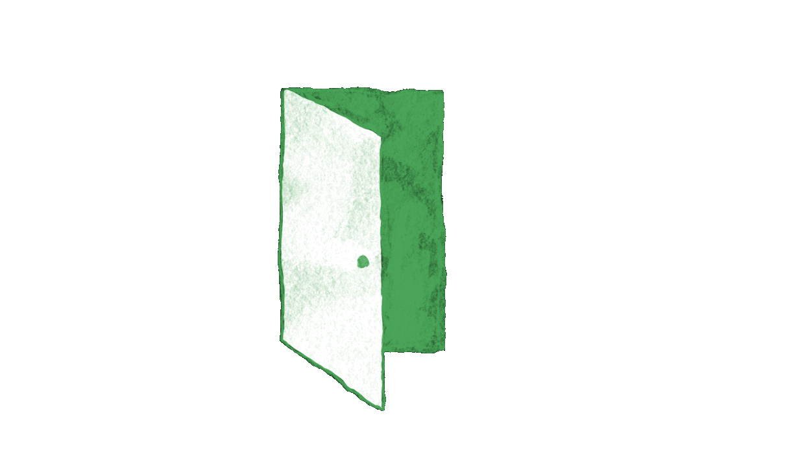
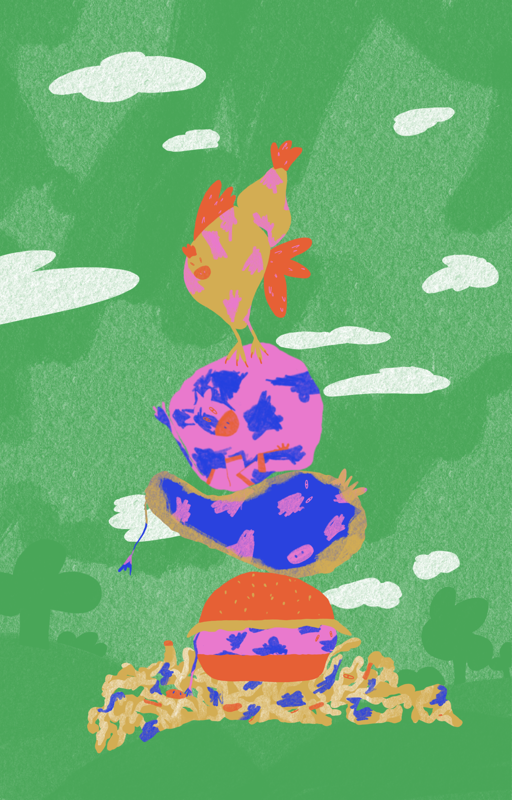
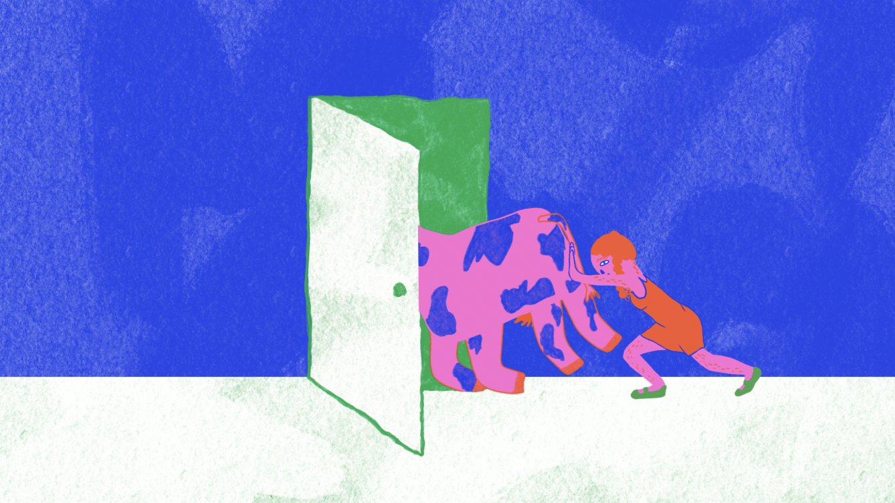
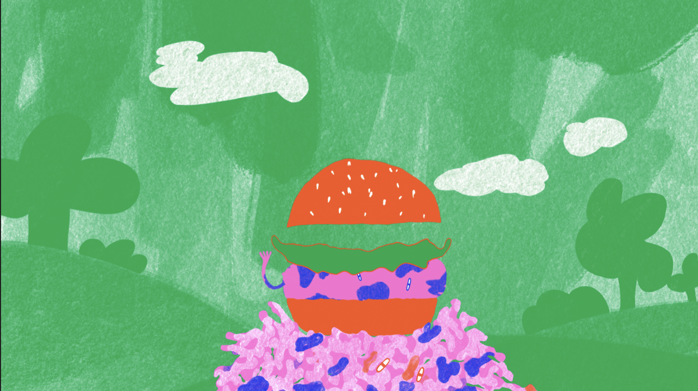
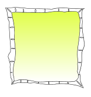
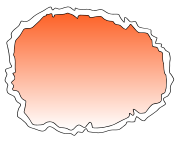
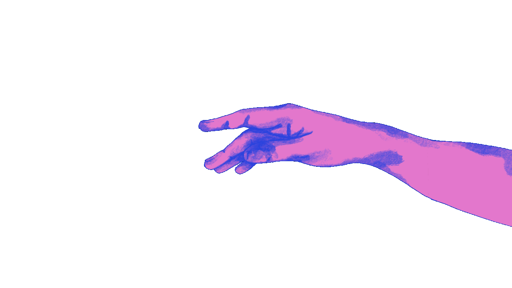
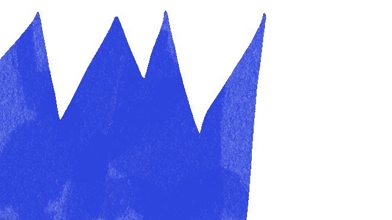
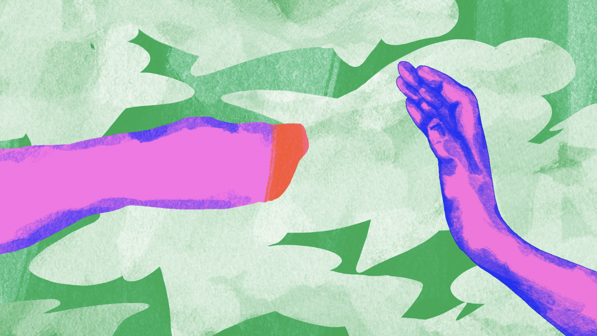
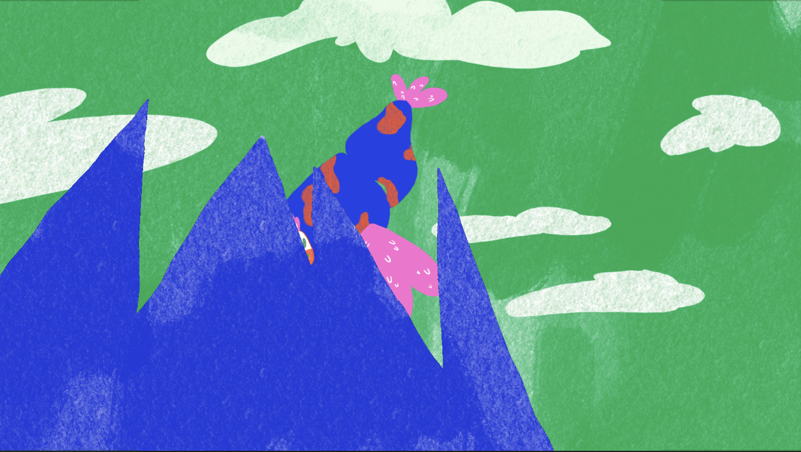

Project
I DON’T
TOUCH MEAT
‘I Don’t Touch Meat’ is a short animation I created using an audio clip from the Israeli TV show Come Eat with Me, which later became a viral meme in Israel.
Challenges
- Finding ways to add a visual twist to the words, giving the humour a second layer of meaning.
- It was my first time illustrating multiple scenes, so I had to learn how to create a seamless flow between them.
- Finding an illustration style that worked with the humour of the story. I originally chose a darker colour palette, but realised it didn't quite fit.
Year
2026
Field
Motion. Illustration.





NEXT PROJECT
Grunge

PREVIOUS PROJECT
The Witch





Project
I DON’T
TOUCH MEAT
‘I Don’t Touch Meat’ is a short animation I created using an audio clip from the Israeli TV show Come Eat with Me, which later became a viral meme in Israel.
Challenges
- Finding ways to add a visual twist to the words, giving the humour a second layer of meaning.
- It was my first time illustrating multiple scenes, so I had to learn how to create a seamless flow between them.
- Finding an illustration style that worked with the humour of the story. I originally chose a darker colour palette, but realised it didn't quite fit.
Year
2026
Field
Motion. Illustration.
PREVIOUS
PROJECT
Judges, Chapter 4
NEXT PROJECT
The Witch
Think you have something to work on with me?
REACH OUT!
Email me
yaelgosling5@gmail.comLet’s talk
+972 538521501